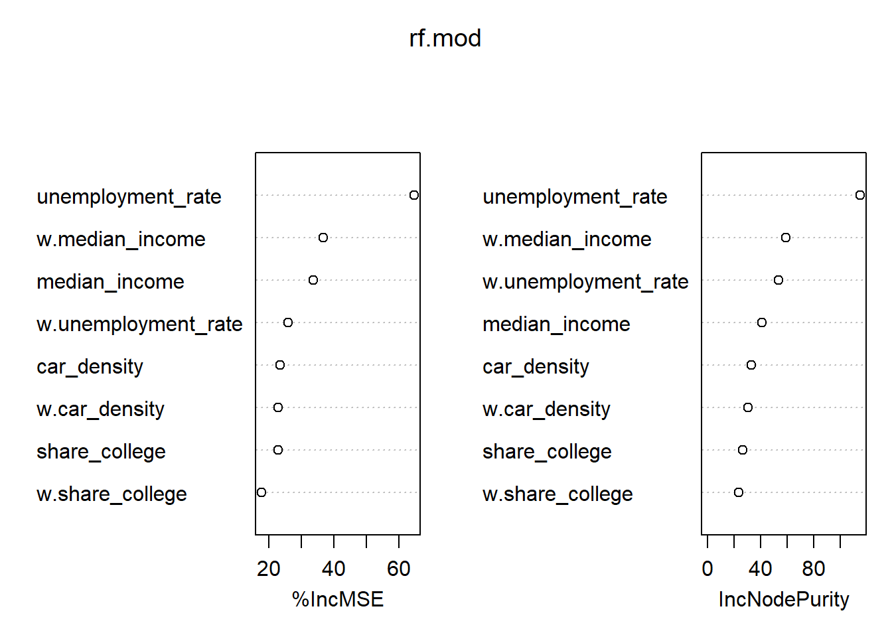
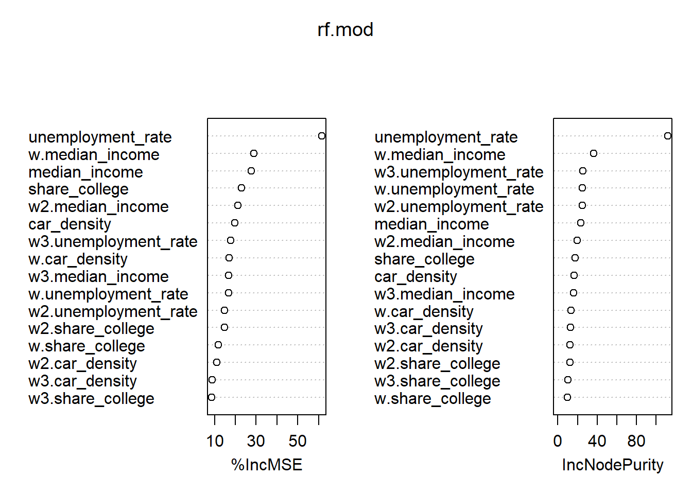

6 Exercise II
\[ \newcommand{\Exp}{\mathrm{E}} \newcommand\given[1][]{\:#1\vert\:} \newcommand{\Cov}{\mathrm{Cov}} \newcommand{\Var}{\mathrm{Var}} \newcommand{\rank}{\mathrm{rank}} \newcommand{\bm}[1]{\boldsymbol{\mathbf{#1}}} \]
Required packages
Session info
R version 4.3.1 (2023-06-16 ucrt)
Platform: x86_64-w64-mingw32/x64 (64-bit)
Running under: Windows 10 x64 (build 19044)
Matrix products: default
locale:
[1] LC_COLLATE=English_United Kingdom.utf8
[2] LC_CTYPE=English_United Kingdom.utf8
[3] LC_MONETARY=English_United Kingdom.utf8
[4] LC_NUMERIC=C
[5] LC_TIME=English_United Kingdom.utf8
time zone: Europe/Berlin
tzcode source: internal
attached base packages:
[1] stats graphics grDevices utils datasets methods
[7] base
other attached packages:
[1] viridisLite_0.4.2 tmap_3.3-3 spatialreg_1.2-9
[4] Matrix_1.5-4.1 spdep_1.2-8 spData_2.3.0
[7] mapview_2.11.0 sf_1.0-13
loaded via a namespace (and not attached):
[1] xfun_0.39 raster_3.6-23 htmlwidgets_1.6.2
[4] lattice_0.21-8 vctrs_0.6.3 tools_4.3.1
[7] crosstalk_1.2.0 LearnBayes_2.15.1 generics_0.1.3
[10] parallel_4.3.1 sandwich_3.0-2 stats4_4.3.1
[13] tibble_3.2.1 proxy_0.4-27 fansi_1.0.4
[16] pkgconfig_2.0.3 KernSmooth_2.23-21 satellite_1.0.4
[19] RColorBrewer_1.1-3 leaflet_2.1.2 webshot_0.5.5
[22] lifecycle_1.0.3 compiler_4.3.1 deldir_1.0-9
[25] munsell_0.5.0 terra_1.7-39 leafsync_0.1.0
[28] codetools_0.2-19 stars_0.6-1 htmltools_0.5.5
[31] class_7.3-22 pillar_1.9.0 MASS_7.3-60
[34] classInt_0.4-9 lwgeom_0.2-13 wk_0.7.3
[37] abind_1.4-5 boot_1.3-28.1 multcomp_1.4-25
[40] nlme_3.1-162 tidyselect_1.2.0 digest_0.6.32
[43] mvtnorm_1.2-2 dplyr_1.1.2 splines_4.3.1
[46] fastmap_1.1.1 grid_4.3.1 colorspace_2.1-0
[49] expm_0.999-7 cli_3.6.1 magrittr_2.0.3
[52] base64enc_0.1-3 dichromat_2.0-0.1 XML_3.99-0.14
[55] survival_3.5-5 utf8_1.2.3 TH.data_1.1-2
[58] leafem_0.2.0 e1071_1.7-13 scales_1.2.1
[61] sp_1.6-1 rmarkdown_2.23 zoo_1.8-12
[64] png_0.1-8 coda_0.19-4 evaluate_0.21
[67] knitr_1.43 tmaptools_3.1-1 s2_1.1.4
[70] rlang_1.1.1 Rcpp_1.0.10 glue_1.6.2
[73] DBI_1.1.3 rstudioapi_0.14 jsonlite_1.8.5
[76] R6_2.5.1 units_0.8-2 Reload data from pervious session
load("_data/msoa2_spatial.RData")6.1 Environmental inequality
How would you investigate the following descriptive research question: Are ethnic (and immigrant) minorities in London exposed to higher levels of pollution? Also consider the spatial structure. What’s your dependent and whats your independent variable?
1) Define a neigbours weights object of your choice
Assume a typical neighbourhood would be 2.5km in diameter
coords <- st_centroid(msoa.spdf)Warning: st_centroid assumes attributes are constant over
geometries# Neighbours within 3km distance
dist_15.nb <- dnearneigh(coords, d1 = 0, d2 = 2500)
summary(dist_15.nb)Neighbour list object:
Number of regions: 983
Number of nonzero links: 15266
Percentage nonzero weights: 1.579859
Average number of links: 15.53001
4 regions with no links:
158 463 478 505
Link number distribution:
0 1 2 3 4 5 6 7 8 9 10 11 12 13 14 15 16 17 18 19 20 21
4 5 9 23 19 26 36 31 53 39 61 63 59 48 42 35 24 31 28 30 27 26
22 23 24 25 26 27 28 29 30 31 32 33 34
25 19 38 29 32 38 26 16 20 10 8 1 2
5 least connected regions:
160 469 474 597 959 with 1 link
2 most connected regions:
565 567 with 34 links# There are some mpty one. Lets impute with the nearest neighbour
k2.nb <- knearneigh(coords, k = 1)
# Replace zero
nolink_ids <- which(card(dist_15.nb) == 0)
dist_15.nb[card(dist_15.nb) == 0] <- k2.nb$nn[nolink_ids, ]
summary(dist_15.nb)Neighbour list object:
Number of regions: 983
Number of nonzero links: 15270
Percentage nonzero weights: 1.580273
Average number of links: 15.53408
Link number distribution:
1 2 3 4 5 6 7 8 9 10 11 12 13 14 15 16 17 18 19 20 21 22
9 9 23 19 26 36 31 53 39 61 63 59 48 42 35 24 31 28 30 27 26 25
23 24 25 26 27 28 29 30 31 32 33 34
19 38 29 32 38 26 16 20 10 8 1 2
9 least connected regions:
158 160 463 469 474 478 505 597 959 with 1 link
2 most connected regions:
565 567 with 34 links# listw object with row-normalization
dist_15.lw <- nb2listw(dist_15.nb, style = "W")2) Estimate the extent of spatial auto-correlation
moran.test(msoa.spdf$no2, listw = dist_15.lw)
Moran I test under randomisation
data: msoa.spdf$no2
weights: dist_15.lw
Moran I statistic standard deviate = 65.197, p-value <
2.2e-16
alternative hypothesis: greater
sample estimates:
Moran I statistic Expectation Variance
0.891520698 -0.001018330 0.000187411 3) Estimate a spatial SAR regression model
- Estimate a spatial autoregressive SAR model
mod_1.sar <- lagsarlm(log(no2) ~ per_mixed + per_asian + per_black + per_other
+ per_nonUK_EU + per_nonEU + log(POPDEN),
data = msoa.spdf,
listw = dist_15.lw,
Durbin = FALSE) # we could here extend to SDM
summary(mod_1.sar)
Call:
lagsarlm(formula = log(no2) ~ per_mixed + per_asian + per_black +
per_other + per_nonUK_EU + per_nonEU + log(POPDEN), data = msoa.spdf,
listw = dist_15.lw, Durbin = FALSE)
Residuals:
Min 1Q Median 3Q Max
-0.2140485 -0.0267085 -0.0021421 0.0238337 0.3505513
Type: lag
Coefficients: (asymptotic standard errors)
Estimate Std. Error z value Pr(>|z|)
(Intercept) -1.7004e-02 1.8122e-02 -0.9383 0.348110
per_mixed 3.4376e-04 1.4758e-03 0.2329 0.815810
per_asian -8.5205e-05 1.1494e-04 -0.7413 0.458507
per_black -4.2754e-04 2.3468e-04 -1.8218 0.068484
per_other 1.9693e-03 7.4939e-04 2.6279 0.008591
per_nonUK_EU 8.9027e-04 3.9638e-04 2.2460 0.024703
per_nonEU 1.8460e-03 3.5159e-04 5.2506 1.516e-07
log(POPDEN) 1.8650e-02 2.7852e-03 6.6963 2.138e-11
Rho: 0.9684, LR test value: 2002.5, p-value: < 2.22e-16
Asymptotic standard error: 0.0063124
z-value: 153.41, p-value: < 2.22e-16
Wald statistic: 23535, p-value: < 2.22e-16
Log likelihood: 1562.401 for lag model
ML residual variance (sigma squared): 0.0020568, (sigma: 0.045352)
Number of observations: 983
Number of parameters estimated: 10
AIC: -3104.8, (AIC for lm: -1104.3)
LM test for residual autocorrelation
test value: 108.97, p-value: < 2.22e-16- Have a look into the true multiplier matrix \(({\bm I_N}-\rho {\bm W})^{-1}\beta_k\)
W <- listw2mat(dist_15.lw)
I <- diag(dim(W)[1])
rho <- unname(mod_1.sar$rho)
M <- solve(I - rho*W)
M[1:10, 1:10] 1 2 3 4 5
[1,] 1.164650997 0.002433319 0.004089559 0.004034508 0.006545994
[2,] 0.010706605 1.407336301 0.643881932 0.370049927 0.464794934
[3,] 0.011246286 0.402426207 1.474021599 0.429011868 0.641526285
[4,] 0.008875918 0.185024963 0.343209495 1.684533322 0.614086824
[5,] 0.012000989 0.193664556 0.427684190 0.511739020 1.560840834
[6,] 0.010741524 0.192552594 0.452940016 0.631452476 0.672787841
[7,] 0.012779708 0.141953871 0.299247377 0.418234186 0.616895800
[8,] 0.014769006 0.125781189 0.253122442 0.295553039 0.500919513
[9,] 0.011708131 0.147549264 0.309080773 0.568442619 0.629156269
[10,] 0.009937859 0.152900148 0.306652041 0.727001926 0.553973310
6 7 8 9 10
[1,] 0.004882511 0.005808958 0.00872714 0.005854065 0.003613767
[2,] 0.385105188 0.283907742 0.32703109 0.324608380 0.244640236
[3,] 0.566175019 0.374059222 0.41132397 0.424986063 0.306652041
[4,] 0.631452476 0.418234186 0.38421895 0.625286881 0.581601541
[5,] 0.560656534 0.514079833 0.54266281 0.576726579 0.369315540
[6,] 1.571175245 0.558170218 0.46513922 0.661184961 0.543820047
[7,] 0.558170218 1.475511568 0.58520461 0.614170880 0.463886540
[8,] 0.357799398 0.450157392 1.46638195 0.474994894 0.272339890
[9,] 0.601077237 0.558337164 0.56135760 1.581077095 0.517983092
[10,] 0.679775059 0.579858174 0.44255232 0.712226751 1.560083138- Create an \(N \times N\) effects matrix. What is the effect of unit 6 on unit 10?
# For beta 1
beta <- mod_1.sar$coefficients
effM <- beta[2] * M
effM[1:10, 1:10] 1 2 3 4
[1,] 4.003610e-04 8.364789e-07 1.405829e-06 1.386904e-06
[2,] 3.680507e-06 4.837866e-04 2.213411e-04 1.272085e-04
[3,] 3.866028e-06 1.383382e-04 5.067103e-04 1.474773e-04
[4,] 3.051190e-06 6.360427e-05 1.179819e-04 5.790759e-04
[5,] 4.125465e-06 6.657422e-05 1.470209e-04 1.759156e-04
[6,] 3.692511e-06 6.619197e-05 1.557029e-04 2.170684e-04
[7,] 4.393158e-06 4.879813e-05 1.028694e-04 1.437724e-04
[8,] 5.077000e-06 4.323860e-05 8.701349e-05 1.015994e-04
[9,] 4.024792e-06 5.072160e-05 1.062497e-04 1.954081e-04
[10,] 3.416243e-06 5.256102e-05 1.054148e-04 2.499145e-04
5 6 7 8
[1,] 2.250254e-06 1.678414e-06 1.996890e-06 3.000045e-06
[2,] 1.597781e-04 1.323839e-04 9.759625e-05 1.124204e-04
[3,] 2.205314e-04 1.946286e-04 1.285868e-04 1.413969e-04
[4,] 2.110988e-04 2.170684e-04 1.437724e-04 1.320793e-04
[5,] 5.365554e-04 1.927315e-04 1.767203e-04 1.865460e-04
[6,] 2.312779e-04 5.401079e-04 1.918768e-04 1.598965e-04
[7,] 2.120644e-04 1.918768e-04 5.072225e-04 2.011702e-04
[8,] 1.721963e-04 1.229973e-04 1.547463e-04 5.040841e-04
[9,] 2.162790e-04 2.066266e-04 1.919342e-04 1.929725e-04
[10,] 1.904341e-04 2.336798e-04 1.993323e-04 1.521320e-04
9 10
[1,] 2.012396e-06 1.242270e-06
[2,] 1.115875e-04 8.409764e-05
[3,] 1.460934e-04 1.054148e-04
[4,] 2.149489e-04 1.999316e-04
[5,] 1.982558e-04 1.269561e-04
[6,] 2.272892e-04 1.869438e-04
[7,] 2.111277e-04 1.594658e-04
[8,] 1.632845e-04 9.361968e-05
[9,] 5.435118e-04 1.780621e-04
[10,] 2.448354e-04 5.362949e-04# "Effect" of unit 6 on unit 10
effM[10, 6] 6
0.0002336798 - Estimate a spatial autoregressive SLX model
- Calculate and interpret the summary impact measures for SAR and SLX.
mod_1.sar.imp <- impacts(mod_1.sar, listw = dist_15.lw, R = 300)
summary(mod_1.sar.imp)Impact measures (lag, exact):
Direct Indirect Total
per_mixed 0.0004939013 0.010385844 0.010879745
per_asian -0.0001224192 -0.002574253 -0.002696672
per_black -0.0006142789 -0.012917166 -0.013531445
per_other 0.0028294759 0.059498722 0.062328198
per_nonUK_EU 0.0012791011 0.026897166 0.028176267
per_nonEU 0.0026523198 0.055773451 0.058425770
log(POPDEN) 0.0267960076 0.563471199 0.590267206
========================================================
Simulation results ( variance matrix):
Direct:
Iterations = 1:300
Thinning interval = 1
Number of chains = 1
Sample size per chain = 300
1. Empirical mean and standard deviation for each variable,
plus standard error of the mean:
Mean SD Naive SE Time-series SE
per_mixed 0.0006290 0.0021515 1.242e-04 1.242e-04
per_asian -0.0001198 0.0001745 1.007e-05 9.506e-06
per_black -0.0006360 0.0003383 1.953e-05 1.953e-05
per_other 0.0028917 0.0011012 6.358e-05 6.358e-05
per_nonUK_EU 0.0012287 0.0005869 3.388e-05 3.388e-05
per_nonEU 0.0026579 0.0005215 3.011e-05 3.011e-05
log(POPDEN) 0.0268259 0.0039352 2.272e-04 2.272e-04
2. Quantiles for each variable:
2.5% 25% 50% 75% 97.5%
per_mixed -3.827e-03 -0.0007547 0.0006964 2.161e-03 4.419e-03
per_asian -4.861e-04 -0.0002168 -0.0001131 -5.023e-06 1.970e-04
per_black -1.298e-03 -0.0008304 -0.0006485 -4.257e-04 6.152e-05
per_other 9.995e-04 0.0020405 0.0028719 3.625e-03 5.070e-03
per_nonUK_EU 3.855e-05 0.0008247 0.0012489 1.635e-03 2.382e-03
per_nonEU 1.665e-03 0.0023344 0.0026625 2.934e-03 3.719e-03
log(POPDEN) 1.916e-02 0.0242278 0.0268096 2.959e-02 3.369e-02
========================================================
Indirect:
Iterations = 1:300
Thinning interval = 1
Number of chains = 1
Sample size per chain = 300
1. Empirical mean and standard deviation for each variable,
plus standard error of the mean:
Mean SD Naive SE Time-series SE
per_mixed 0.012864 0.050341 0.0029064 0.0029064
per_asian -0.002726 0.004235 0.0002445 0.0002285
per_black -0.013862 0.008827 0.0005097 0.0005097
per_other 0.062871 0.029156 0.0016833 0.0016833
per_nonUK_EU 0.026055 0.012921 0.0007460 0.0007460
per_nonEU 0.058273 0.021248 0.0012267 0.0012267
log(POPDEN) 0.579798 0.138802 0.0080137 0.0080137
2. Quantiles for each variable:
2.5% 25% 50% 75% 97.5%
per_mixed -0.08134 -0.01628 0.014219 4.466e-02 0.093136
per_asian -0.01218 -0.00489 -0.002383 -9.328e-05 0.004075
per_black -0.02880 -0.01909 -0.013133 -8.606e-03 0.001124
per_other 0.02104 0.04230 0.059895 7.821e-02 0.119970
per_nonUK_EU 0.00100 0.01768 0.025476 3.338e-02 0.053705
per_nonEU 0.03309 0.04539 0.055598 6.570e-02 0.097426
log(POPDEN) 0.36831 0.48458 0.563189 6.568e-01 0.853630
========================================================
Total:
Iterations = 1:300
Thinning interval = 1
Number of chains = 1
Sample size per chain = 300
1. Empirical mean and standard deviation for each variable,
plus standard error of the mean:
Mean SD Naive SE Time-series SE
per_mixed 0.013493 0.052405 0.0030256 0.0030256
per_asian -0.002846 0.004401 0.0002541 0.0002375
per_black -0.014498 0.009134 0.0005274 0.0005274
per_other 0.065763 0.030096 0.0017376 0.0017376
per_nonUK_EU 0.027283 0.013461 0.0007772 0.0007772
per_nonEU 0.060931 0.021644 0.0012496 0.0012496
log(POPDEN) 0.606624 0.140899 0.0081348 0.0081348
2. Quantiles for each variable:
2.5% 25% 50% 75% 97.5%
per_mixed -0.084945 -0.017213 0.014974 0.046660 0.097314
per_asian -0.012624 -0.005098 -0.002513 -0.000098 0.004275
per_black -0.029797 -0.020036 -0.013809 -0.009053 0.001185
per_other 0.022118 0.044524 0.062740 0.081491 0.124774
per_nonUK_EU 0.001039 0.018489 0.026746 0.035081 0.056067
per_nonEU 0.035101 0.048061 0.058173 0.068653 0.101046
log(POPDEN) 0.390419 0.511445 0.591754 0.683240 0.884687For SLX, you can just interpret the coefficients. Impacts will give you the same results.
4) Is SAR the right model choice or would you rather estimate a different model?
How do results change once you specify a spatial Durbin model?
Please calculate and interpret the impacts for a spatial Durbin model.
6.2 Life Expecatancy in Germany
Below, we read and transform some characteristics of the INKAR data on German counties.
load("_data/inkar2.Rdata")Variables are
| Variable | Description |
|---|---|
| “Kennziffer” | ID |
| “Raumeinheit” | Name |
| “Aggregat” | Level |
| “year” | Year |
| “poluation_density” | Population Density |
| “median_income” | Median Household income (only for 2020) |
| “gdp_in1000EUR” | Gross Domestic Product in 1000 euros |
| “unemployment_rate” | Unemployment rate |
| “share_longterm_unemployed” | Share of longterm unemployed (among unemployed) |
| “share_working_indutry” | Share of employees in undistrial sector |
| “share_foreigners” | Share of foreign nationals |
| “share_college” | Share of school-finishers with college degree |
| “recreational_space” | Recreational space per inhabitant |
| “car_density” | Density of cars |
| “life_expectancy” | Life expectancy |
And we get the respective county shapes:
kreise.spdf <- st_read(dsn = "_data/vg5000_ebenen_1231",
layer = "VG5000_KRS")Reading layer `VG5000_KRS' from data source
`C:\work\Lehre\Geodata_Spatial_Regression_short\_data\vg5000_ebenen_1231'
using driver `ESRI Shapefile'
Simple feature collection with 400 features and 24 fields
Geometry type: MULTIPOLYGON
Dimension: XY
Bounding box: xmin: 280353.1 ymin: 5235878 xmax: 921261.6 ymax: 6101302
Projected CRS: ETRS89 / UTM zone 32N6.2.1 1) Merge data with the shape file (as with conventional data)
# Merge
inkar_2020.spdf <- merge(kreise.spdf, inkar.df[inkar.df$year == 2020, ],
by.x = "AGS", by.y = "Kennziffer")6.2.2 2) Create a map of life-expectancy
cols <- viridis(n = 100, direction = -1, option = "G")
mp1 <- tm_shape(inkar_2020.spdf) +
tm_fill(col = "life_expectancy",
style = "cont", # algorithm to def cut points
palette = cols, # colours
stretch.palette = TRUE,
title = "in years"
) +
tm_borders(col = "white", lwd = 0.5, alpha = 0.5) +
tm_layout(frame = FALSE,
legend.frame = TRUE, legend.bg.color = TRUE,
legend.position = c("right", "bottom"),
legend.outside = FALSE,
main.title = "Life expectancy",
main.title.position = "center",
main.title.size = 1.6,
legend.title.size = 0.8,
legend.text.size = 0.8)
mp16.2.3 3) Chose some variables that could predict life expectancy. See for instance the following paper.
6.2.4 4) Generate a neighbours object (e.g. the 10 nearest neighbours).
# nb <- poly2nb(kreise.spdf, row.names = "ags", queen = TRUE)
knn <- knearneigh(st_centroid(kreise.spdf), k = 10)Warning: st_centroid assumes attributes are constant over
geometriesnb <- knn2nb(knn, row.names = kreise.spdf$ags)
listw <- nb2listw(nb, style = "W")6.2.5 5) Estimate a cross-sectional spatial model for the year 2020 and calculate the impacts.
### Use a spatial Durbin Error model
# Spec formula
fm <- life_expectancy ~ median_income + unemployment_rate + share_college + car_density
# Estimate error model with Durbin = TRUE
mod_1.durb <- errorsarlm(fm,
data = inkar_2020.spdf,
listw = listw,
Durbin = TRUE)
summary(mod_1.durb)
Call:
errorsarlm(formula = fm, data = inkar_2020.spdf, listw = listw,
Durbin = TRUE)
Residuals:
Min 1Q Median 3Q Max
-1.343988 -0.349564 0.013309 0.333105 1.819014
Type: error
Coefficients: (asymptotic standard errors)
Estimate Std. Error z value Pr(>|z|)
(Intercept) 8.4970e+01 1.4366e+00 59.1460 < 2.2e-16
median_income 5.4013e-04 8.2285e-05 6.5642 5.233e-11
unemployment_rate -3.8970e-01 2.0095e-02 -19.3923 < 2.2e-16
share_college 6.7806e-03 3.2502e-03 2.0862 0.036957
car_density -3.2042e-03 4.9774e-04 -6.4376 1.214e-10
lag.median_income 4.9282e-04 1.8112e-04 2.7209 0.006510
lag.unemployment_rate -3.4685e-02 4.5454e-02 -0.7631 0.445415
lag.share_college -1.7066e-03 7.0324e-03 -0.2427 0.808256
lag.car_density -5.2210e-03 1.7540e-03 -2.9766 0.002915
Lambda: 0.57895, LR test value: 48.146, p-value: 3.9563e-12
Asymptotic standard error: 0.069524
z-value: 8.3274, p-value: < 2.22e-16
Wald statistic: 69.345, p-value: < 2.22e-16
Log likelihood: -305.6855 for error model
ML residual variance (sigma squared): 0.26001, (sigma: 0.50991)
Number of observations: 400
Number of parameters estimated: 11
AIC: NA (not available for weighted model), (AIC for lm: 679.52)# Calculate impacts (which is unnecessary in this case)
mod_1.durb.imp <- impacts(mod_1.durb, listw = listw, R = 300)
summary(mod_1.durb.imp, zstats = TRUE, short = TRUE)Impact measures (SDEM, glht, n):
Direct Indirect Total
median_income 0.0005401288 0.0004928219 0.001032951
unemployment_rate -0.3896966870 -0.0346850573 -0.424381744
share_college 0.0067806074 -0.0017065824 0.005074025
car_density -0.0032042421 -0.0052210252 -0.008425267
========================================================
Standard errors:
Direct Indirect Total
median_income 8.228463e-05 0.0001811231 0.0001813201
unemployment_rate 2.009540e-02 0.0454539507 0.0455753453
share_college 3.250157e-03 0.0070323527 0.0069549479
car_density 4.977409e-04 0.0017540485 0.0018942462
========================================================
Z-values:
Direct Indirect Total
median_income 6.564152 2.7209218 5.6968356
unemployment_rate -19.392336 -0.7630812 -9.3116518
share_college 2.086240 -0.2426759 0.7295561
car_density -6.437570 -2.9765569 -4.4478205
p-values:
Direct Indirect Total
median_income 5.233e-11 0.0065100 1.2205e-08
unemployment_rate < 2.22e-16 0.4454149 < 2.22e-16
share_college 0.036957 0.8082565 0.46566
car_density 1.214e-10 0.0029151 8.6746e-066.2.6 6) Calculate the spatial lagged variables for your covariates (e.g. use create_WX(), which needs a non-spatial df as input) .
6.2.7 6) Can you run a spatial machine learning model? (for instance, using randomForest)?
Warning: package 'randomForest' was built under R version 4.3.2randomForest 4.7-1.1Type rfNews() to see new features/changes/bug fixes.# Train
rf.mod <- randomForest(life_expectancy ~ median_income + unemployment_rate + share_college + car_density +
w.median_income + w.unemployment_rate + w.share_college + w.car_density,
data = st_drop_geometry(inkar_2020.spdf),
ntree = 1000,
importance = TRUE)
# Inspect the mechanics of the model
importance(rf.mod) %IncMSE IncNodePurity
median_income 33.60659 40.78685
unemployment_rate 64.62806 114.71155
share_college 22.82387 26.27735
car_density 23.51385 32.96287
w.median_income 36.80049 58.60537
w.unemployment_rate 25.87530 53.53837
w.share_college 17.79590 23.29938
w.car_density 22.88666 30.58426varImpPlot(rf.mod)
You could even go further and use higher order neighbours (e.g. nblag(queens.nb, maxlag = 3)) to check the importance of direct neighbours and the neighbours neighbours and so on …
# Create higher order NB object
listw.lag <- nblag(nb, maxlag = 3)
# Create listwise of 1st, 2nd and 3rd order neighbours
listw.lw1 <- nb2listw(listw.lag[[1]], style = "W")
listw.lw2 <- nb2listw(listw.lag[[2]], style = "W")
listw.lw3 <- nb2listw(listw.lag[[3]], style = "W")
# Create lagged X
w_vars2 <- create_WX(st_drop_geometry(inkar_2020.spdf)[, covars],
listw = listw.lw2,
prefix = "w2")
w_vars3 <- create_WX(st_drop_geometry(inkar_2020.spdf)[, covars],
listw = listw.lw3,
prefix = "w3")
inkar_2020.spdf <- cbind(inkar_2020.spdf, w_vars2, w_vars3)
# Train
rf.mod <- randomForest(life_expectancy ~ median_income + unemployment_rate + share_college + car_density +
w.median_income + w.unemployment_rate + w.share_college + w.car_density +
w2.median_income + w2.unemployment_rate + w2.share_college + w2.car_density +
w3.median_income + w3.unemployment_rate + w3.share_college + w3.car_density,
data = st_drop_geometry(inkar_2020.spdf),
ntree = 1000,
importance = TRUE)
# Inspect the mechanics of the model
importance(rf.mod) %IncMSE IncNodePurity
median_income 27.698772 23.107581
unemployment_rate 61.408198 111.652254
share_college 22.900494 17.460207
car_density 19.633700 16.759375
w.median_income 28.809540 36.364268
w.unemployment_rate 16.679323 24.988638
w.share_college 11.884784 9.512635
w.car_density 17.127785 13.527587
w2.median_income 21.241519 19.556860
w2.unemployment_rate 14.932238 24.966208
w2.share_college 14.712295 12.168590
w2.car_density 11.148194 12.264224
w3.median_income 16.685965 16.188840
w3.unemployment_rate 17.785560 25.537481
w3.share_college 8.743832 10.353950
w3.car_density 8.991503 12.893037varImpPlot(rf.mod)